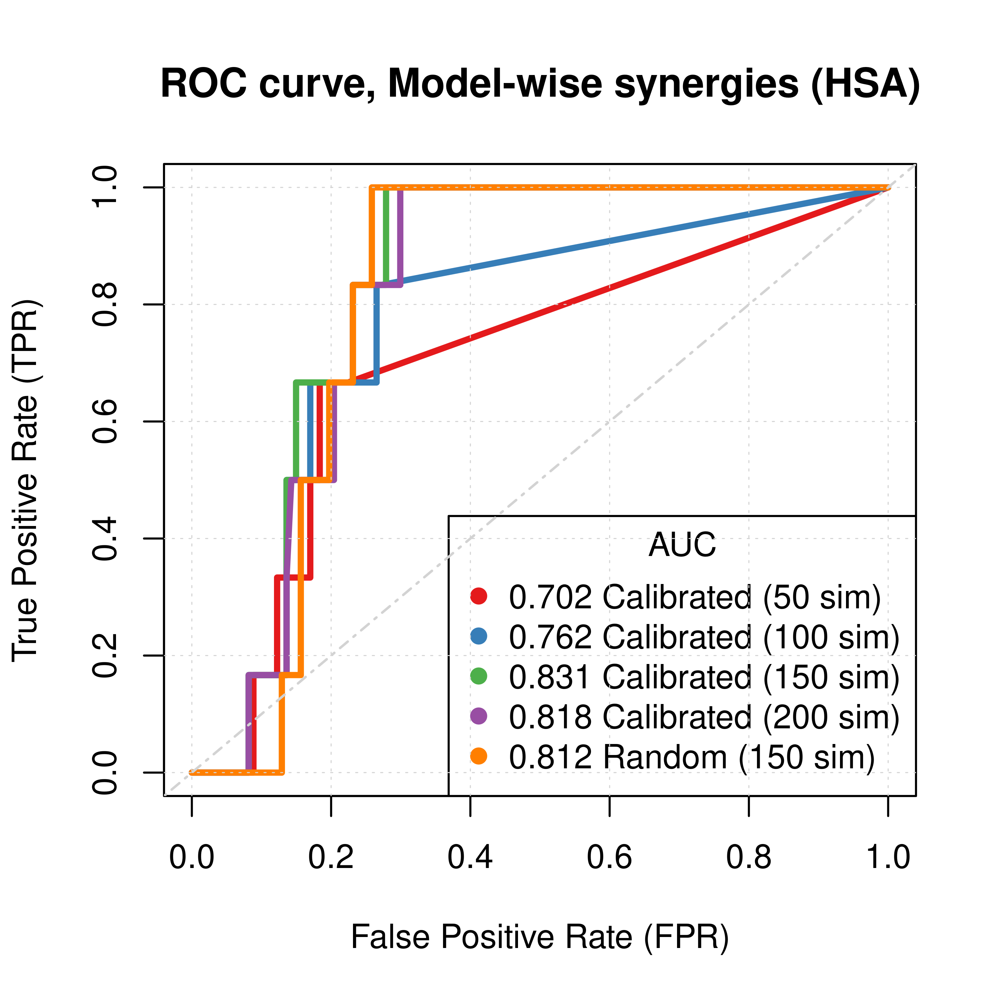
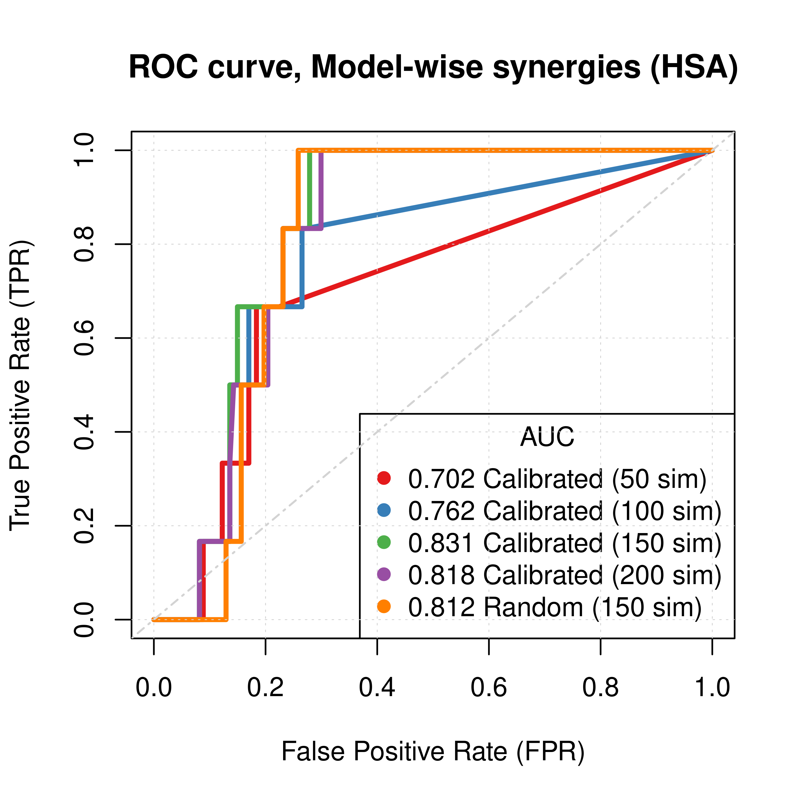
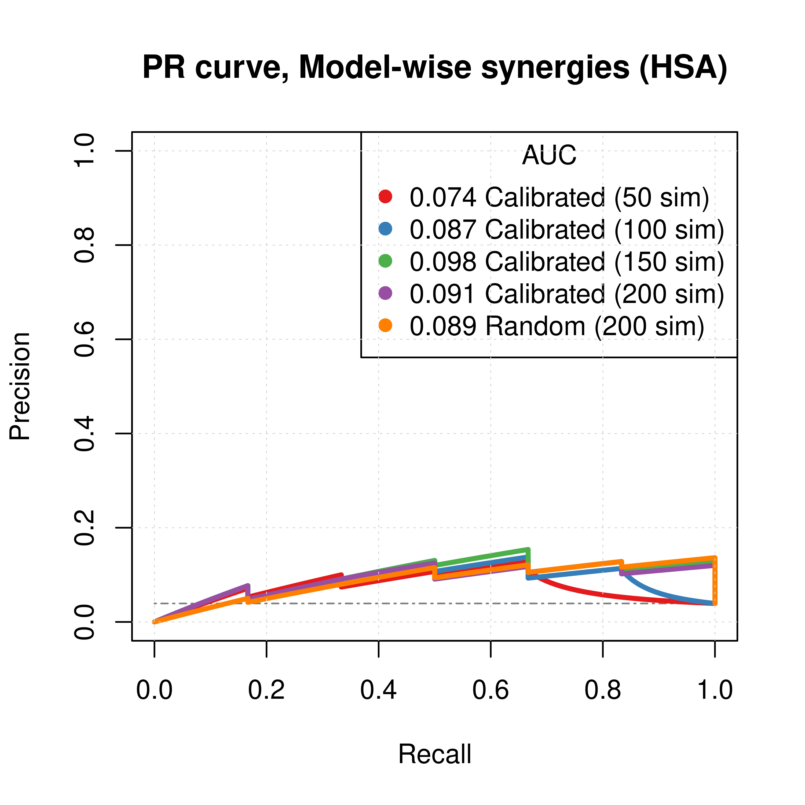
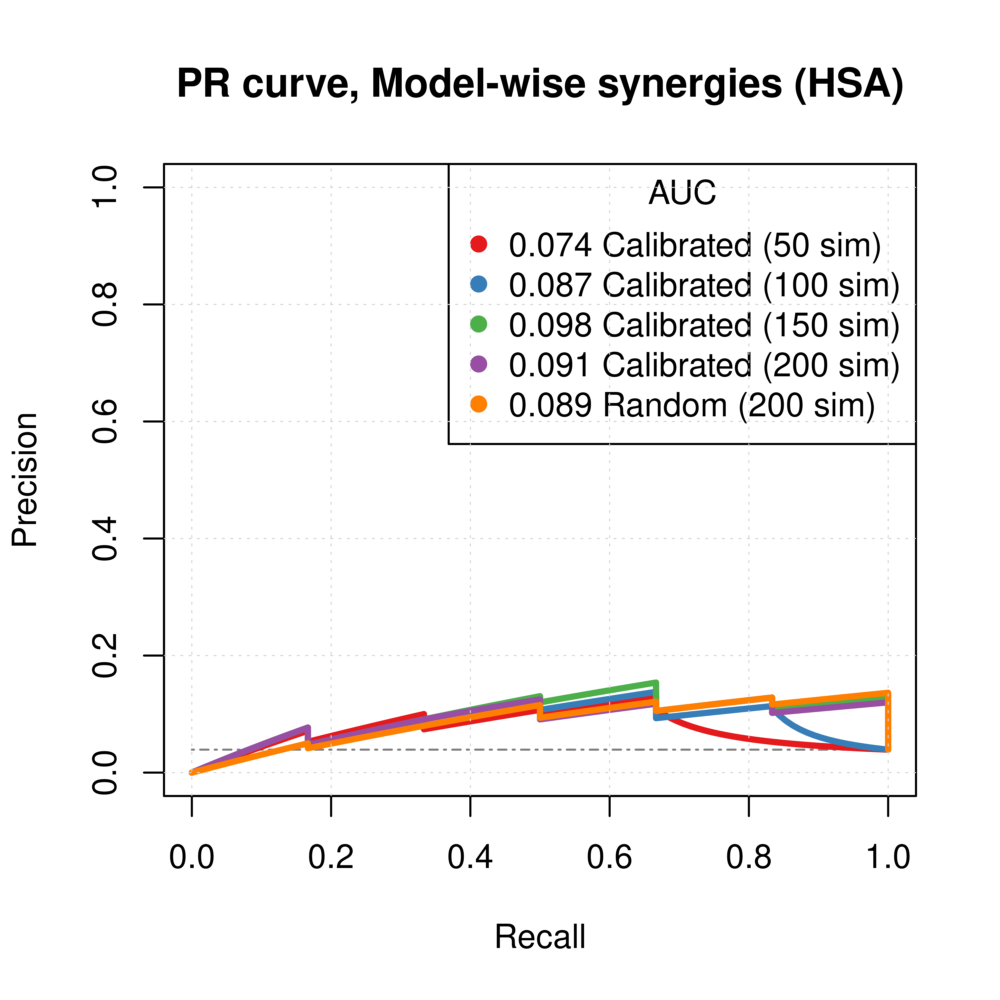
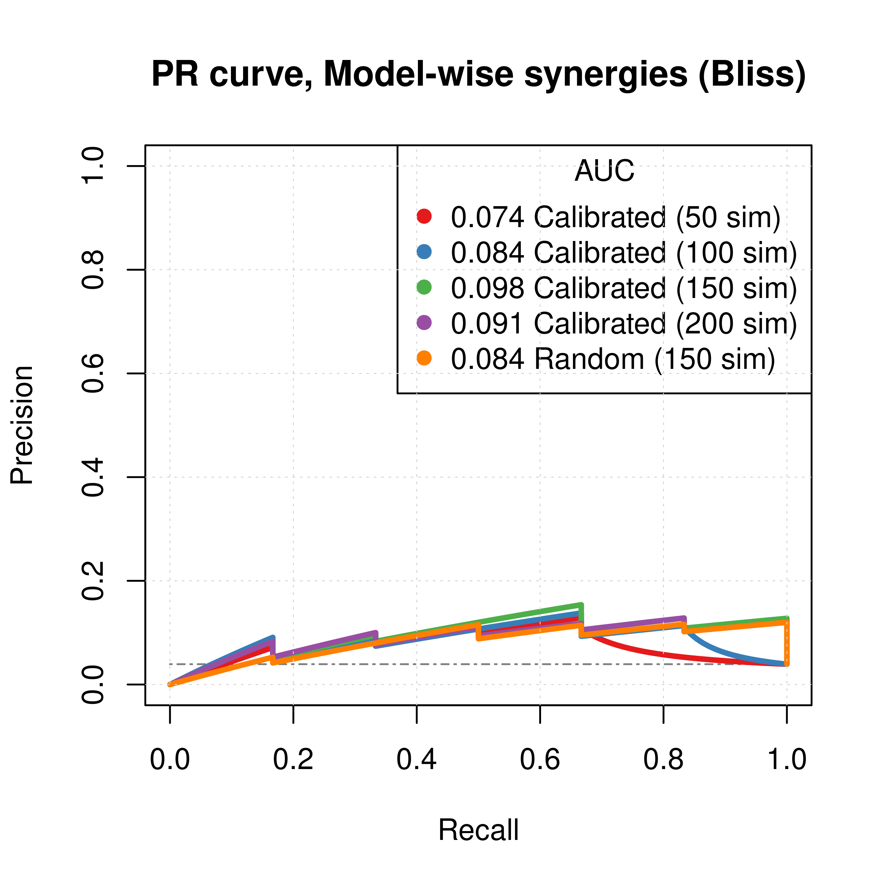
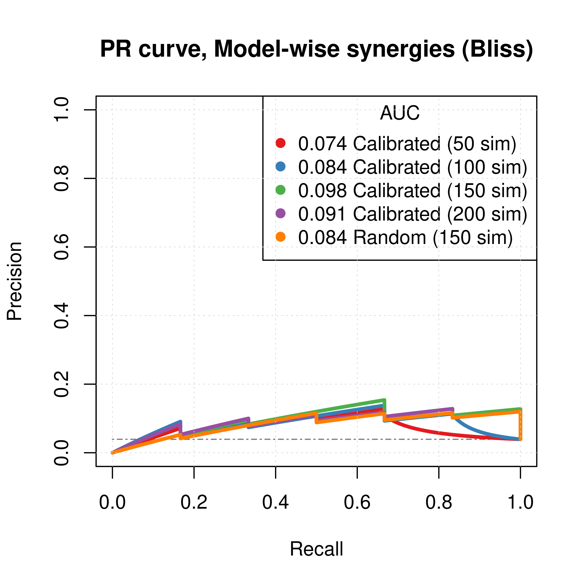

CASCADE 2.0 Analysis (Link Operator Mutations)
Performance of automatically parameterized models against SINTEF dataset (Flobak et al. 2019)
HSA results
- HSA refers to the synergy method used in
Drabmeto assess the synergies from thegitsbemodels - We test performance using ROC and PR AUC for both the ensemble-wise and model-wise synergies from
Drabme - Calibrated models: fitted to steady state (\(50,100,150,200\) simulations)
- Random models: fitted to proliferation profile (\(150\) simulations)
Gitsbemodels have mutations on link operator only
Load results:
# 'ss' => calibrated models, 'prolif' => random models
# 'ew' => ensemble-wise, 'mw' => model-wise
## HSA results
ss_hsa_ensemblewise_50sim_file = paste0("results/link-only/cascade_2.0_ss_50sim_fixpoints_hsa_ensemblewise_synergies.tab")
ss_hsa_modelwise_50sim_file = paste0("results/link-only/cascade_2.0_ss_50sim_fixpoints_hsa_modelwise_synergies.tab")
ss_hsa_ensemblewise_100sim_file = paste0("results/link-only/cascade_2.0_ss_100sim_fixpoints_hsa_ensemblewise_synergies.tab")
ss_hsa_modelwise_100sim_file = paste0("results/link-only/cascade_2.0_ss_100sim_fixpoints_hsa_modelwise_synergies.tab")
ss_hsa_ensemblewise_150sim_file = paste0("results/link-only/cascade_2.0_ss_150sim_fixpoints_hsa_ensemblewise_synergies.tab")
ss_hsa_modelwise_150sim_file = paste0("results/link-only/cascade_2.0_ss_150sim_fixpoints_hsa_modelwise_synergies.tab")
ss_hsa_ensemblewise_200sim_file = paste0("results/link-only/cascade_2.0_ss_200sim_fixpoints_hsa_ensemblewise_synergies.tab")
ss_hsa_modelwise_200sim_file = paste0("results/link-only/cascade_2.0_ss_200sim_fixpoints_hsa_modelwise_synergies.tab")
prolif_hsa_ensemblewise_file = paste0("results/link-only/cascade_2.0_rand_150sim_fixpoints_hsa_ensemblewise_synergies.tab")
prolif_hsa_modelwise_file = paste0("results/link-only/cascade_2.0_rand_150sim_fixpoints_hsa_modelwise_synergies.tab")
ss_hsa_ensemblewise_synergies_50sim = emba::get_synergy_scores(ss_hsa_ensemblewise_50sim_file)
ss_hsa_modelwise_synergies_50sim = emba::get_synergy_scores(ss_hsa_modelwise_50sim_file, file_type = "modelwise")
ss_hsa_ensemblewise_synergies_100sim = emba::get_synergy_scores(ss_hsa_ensemblewise_100sim_file)
ss_hsa_modelwise_synergies_100sim = emba::get_synergy_scores(ss_hsa_modelwise_100sim_file, file_type = "modelwise")
ss_hsa_ensemblewise_synergies_150sim = emba::get_synergy_scores(ss_hsa_ensemblewise_150sim_file)
ss_hsa_modelwise_synergies_150sim = emba::get_synergy_scores(ss_hsa_modelwise_150sim_file, file_type = "modelwise")
ss_hsa_ensemblewise_synergies_200sim = emba::get_synergy_scores(ss_hsa_ensemblewise_200sim_file)
ss_hsa_modelwise_synergies_200sim = emba::get_synergy_scores(ss_hsa_modelwise_200sim_file, file_type = "modelwise")
prolif_hsa_ensemblewise_synergies_150sim = emba::get_synergy_scores(prolif_hsa_ensemblewise_file)
prolif_hsa_modelwise_synergies_150sim = emba::get_synergy_scores(prolif_hsa_modelwise_file, file_type = "modelwise")
# calculate probability of synergy in the modelwise results
ss_hsa_modelwise_synergies_50sim = ss_hsa_modelwise_synergies_50sim %>%
mutate(synergy_prob_ss = synergies/(synergies + `non-synergies`))
ss_hsa_modelwise_synergies_100sim = ss_hsa_modelwise_synergies_100sim %>%
mutate(synergy_prob_ss = synergies/(synergies + `non-synergies`))
ss_hsa_modelwise_synergies_150sim = ss_hsa_modelwise_synergies_150sim %>%
mutate(synergy_prob_ss = synergies/(synergies + `non-synergies`))
ss_hsa_modelwise_synergies_200sim = ss_hsa_modelwise_synergies_200sim %>%
mutate(synergy_prob_ss = synergies/(synergies + `non-synergies`))
prolif_hsa_modelwise_synergies_150sim = prolif_hsa_modelwise_synergies_150sim %>%
mutate(synergy_prob_prolif = synergies/(synergies + `non-synergies`))
observed_synergies_file = 'data/observed_synergies_cascade_2.0'
observed_synergies = emba::get_observed_synergies(observed_synergies_file)
# 1 (positive/observed synergy) or 0 (negative/not observed) for all tested drug combinations
observed = sapply(prolif_hsa_modelwise_synergies_150sim$perturbation %in% observed_synergies, as.integer)
# 'ew' => ensemble-wise, 'mw' => model-wise
pred_ew_hsa = bind_cols(
ss_hsa_ensemblewise_synergies_50sim %>% select(score) %>% rename(ss_score_50sim = score),
ss_hsa_ensemblewise_synergies_100sim %>% select(score) %>% rename(ss_score_100sim = score),
ss_hsa_ensemblewise_synergies_150sim %>% select(score) %>% rename(ss_score_150sim = score),
ss_hsa_ensemblewise_synergies_200sim %>% select(score) %>% rename(ss_score_200sim = score),
prolif_hsa_ensemblewise_synergies_150sim %>% select(score) %>% rename(prolif_score_150sim = score),
as_tibble_col(observed, column_name = "observed"))
pred_mw_hsa = bind_cols(
ss_hsa_modelwise_synergies_50sim %>% select(perturbation, synergy_prob_ss) %>% rename(synergy_prob_ss_50sim = synergy_prob_ss),
ss_hsa_modelwise_synergies_100sim %>% select(synergy_prob_ss) %>% rename(synergy_prob_ss_100sim = synergy_prob_ss),
ss_hsa_modelwise_synergies_150sim %>% select(synergy_prob_ss) %>% rename(synergy_prob_ss_150sim = synergy_prob_ss),
ss_hsa_modelwise_synergies_200sim %>% select(synergy_prob_ss) %>% rename(synergy_prob_ss_200sim = synergy_prob_ss),
prolif_hsa_modelwise_synergies_150sim %>% select(synergy_prob_prolif) %>% rename(synergy_prob_prolif_150sim = synergy_prob_prolif),
as_tibble_col(observed, column_name = "observed"))ROC curves
res_ss_ew_50sim = get_roc_stats(df = pred_ew_hsa, pred_col = "ss_score_50sim", label_col = "observed")
res_ss_ew_100sim = get_roc_stats(df = pred_ew_hsa, pred_col = "ss_score_100sim", label_col = "observed")
res_ss_ew_150sim = get_roc_stats(df = pred_ew_hsa, pred_col = "ss_score_150sim", label_col = "observed")
res_ss_ew_200sim = get_roc_stats(df = pred_ew_hsa, pred_col = "ss_score_200sim", label_col = "observed")
res_prolif_ew_150sim = get_roc_stats(df = pred_ew_hsa, pred_col = "prolif_score_150sim", label_col = "observed")
res_ss_mw_50sim = get_roc_stats(df = pred_mw_hsa, pred_col = "synergy_prob_ss_50sim", label_col = "observed", direction = ">")
res_ss_mw_100sim = get_roc_stats(df = pred_mw_hsa, pred_col = "synergy_prob_ss_100sim", label_col = "observed", direction = ">")
res_ss_mw_150sim = get_roc_stats(df = pred_mw_hsa, pred_col = "synergy_prob_ss_150sim", label_col = "observed", direction = ">")
res_ss_mw_200sim = get_roc_stats(df = pred_mw_hsa, pred_col = "synergy_prob_ss_200sim", label_col = "observed", direction = ">")
res_prolif_mw_150sim = get_roc_stats(df = pred_mw_hsa, pred_col = "synergy_prob_prolif_150sim", label_col = "observed", direction = ">")
# Plot ROCs
plot(x = res_ss_ew_50sim$roc_stats$FPR, y = res_ss_ew_50sim$roc_stats$TPR,
type = 'l', lwd = 3, col = my_palette[1], main = 'ROC curve, Ensemble-wise synergies (HSA)',
xlab = 'False Positive Rate (FPR)', ylab = 'True Positive Rate (TPR)')
lines(x = res_ss_ew_100sim$roc_stats$FPR, y = res_ss_ew_100sim$roc_stats$TPR,
lwd = 3, col = my_palette[2])
lines(x = res_ss_ew_150sim$roc_stats$FPR, y = res_ss_ew_150sim$roc_stats$TPR,
lwd = 3, col = my_palette[3])
lines(x = res_ss_ew_200sim$roc_stats$FPR, y = res_ss_ew_200sim$roc_stats$TPR,
lwd = 3, col = my_palette[4])
lines(x = res_prolif_ew_150sim$roc_stats$FPR, y = res_prolif_ew_150sim$roc_stats$TPR,
lwd = 3, col = my_palette[5])
legend('bottomright', title = 'AUC', col = my_palette[1:5], pch = 19,
legend = c(paste(round(res_ss_ew_50sim$AUC, digits = 3), "Calibrated (50 sim)"),
paste(round(res_ss_ew_100sim$AUC, digits = 3), "Calibrated (100 sim)"),
paste(round(res_ss_ew_150sim$AUC, digits = 3), "Calibrated (150 sim)"),
paste(round(res_ss_ew_200sim$AUC, digits = 3), "Calibrated (200 sim)"),
paste(round(res_prolif_ew_150sim$AUC, digits = 3), "Random (150 sim)")))
grid(lwd = 0.5)
abline(a = 0, b = 1, col = 'lightgrey', lty = 'dotdash', lwd = 1.2)
plot(x = res_ss_mw_50sim$roc_stats$FPR, y = res_ss_mw_50sim$roc_stats$TPR,
type = 'l', lwd = 3, col = my_palette[1], main = 'ROC curve, Model-wise synergies (HSA)',
xlab = 'False Positive Rate (FPR)', ylab = 'True Positive Rate (TPR)')
lines(x = res_ss_mw_100sim$roc_stats$FPR, y = res_ss_mw_100sim$roc_stats$TPR,
lwd = 3, col = my_palette[2])
lines(x = res_ss_mw_150sim$roc_stats$FPR, y = res_ss_mw_150sim$roc_stats$TPR,
lwd = 3, col = my_palette[3])
lines(x = res_ss_mw_200sim$roc_stats$FPR, y = res_ss_mw_200sim$roc_stats$TPR,
lwd = 3, col = my_palette[4])
lines(x = res_prolif_mw_150sim$roc_stats$FPR, y = res_prolif_mw_150sim$roc_stats$TPR,
lwd = 3, col = my_palette[5])
legend('bottomright', title = 'AUC', col = my_palette[1:5], pch = 19,
legend = c(paste(round(res_ss_mw_50sim$AUC, digits = 3), "Calibrated (50 sim)"),
paste(round(res_ss_mw_100sim$AUC, digits = 3), "Calibrated (100 sim)"),
paste(round(res_ss_mw_150sim$AUC, digits = 3), "Calibrated (150 sim)"),
paste(round(res_ss_mw_200sim$AUC, digits = 3), "Calibrated (200 sim)"),
paste(round(res_prolif_mw_150sim$AUC, digits = 3), "Random (150 sim)")))
grid(lwd = 0.5)
abline(a = 0, b = 1, col = 'lightgrey', lty = 'dotdash', lwd = 1.2) 

Figure 26: ROC curves (CASCADE 2.0, HSA synergy method)
PR curves
pr_ss_ew_hsa_50sim = pr.curve(scores.class0 = pred_ew_hsa %>% pull(ss_score_50sim) %>% (function(x) {-x}),
weights.class0 = pred_ew_hsa %>% pull(observed), curve = TRUE, rand.compute = TRUE)
pr_ss_ew_hsa_100sim = pr.curve(scores.class0 = pred_ew_hsa %>% pull(ss_score_100sim) %>% (function(x) {-x}),
weights.class0 = pred_ew_hsa %>% pull(observed), curve = TRUE)
pr_ss_ew_hsa_150sim = pr.curve(scores.class0 = pred_ew_hsa %>% pull(ss_score_150sim) %>% (function(x) {-x}),
weights.class0 = pred_ew_hsa %>% pull(observed), curve = TRUE)
pr_ss_ew_hsa_200sim = pr.curve(scores.class0 = pred_ew_hsa %>% pull(ss_score_200sim) %>% (function(x) {-x}),
weights.class0 = pred_ew_hsa %>% pull(observed), curve = TRUE)
pr_prolif_ew_hsa_150sim = pr.curve(scores.class0 = pred_ew_hsa %>% pull(prolif_score_150sim) %>% (function(x) {-x}),
weights.class0 = pred_ew_hsa %>% pull(observed), curve = TRUE)
pr_ss_mw_hsa_50sim = pr.curve(scores.class0 = pred_mw_hsa %>% pull(synergy_prob_ss_50sim),
weights.class0 = pred_mw_hsa %>% pull(observed), curve = TRUE, rand.compute = TRUE)
pr_ss_mw_hsa_100sim = pr.curve(scores.class0 = pred_mw_hsa %>% pull(synergy_prob_ss_100sim),
weights.class0 = pred_mw_hsa %>% pull(observed), curve = TRUE)
pr_ss_mw_hsa_150sim = pr.curve(scores.class0 = pred_mw_hsa %>% pull(synergy_prob_ss_150sim),
weights.class0 = pred_mw_hsa %>% pull(observed), curve = TRUE)
pr_ss_mw_hsa_200sim = pr.curve(scores.class0 = pred_mw_hsa %>% pull(synergy_prob_ss_200sim),
weights.class0 = pred_mw_hsa %>% pull(observed), curve = TRUE)
pr_prolif_mw_hsa_150sim = pr.curve(scores.class0 = pred_mw_hsa %>% pull(synergy_prob_prolif_150sim),
weights.class0 = pred_mw_hsa %>% pull(observed), curve = TRUE)
plot(pr_ss_ew_hsa_50sim, main = 'PR curve, Ensemble-wise synergies (HSA)',
auc.main = FALSE, color = my_palette[1], rand.plot = TRUE)
plot(pr_ss_ew_hsa_100sim, add = TRUE, color = my_palette[2])
plot(pr_ss_ew_hsa_150sim, add = TRUE, color = my_palette[3])
plot(pr_ss_ew_hsa_200sim, add = TRUE, color = my_palette[4])
plot(pr_prolif_ew_hsa_150sim, add = TRUE, color = my_palette[5])
legend('topright', title = 'AUC', col = my_palette[1:5], pch = 19,
legend = c(paste(round(pr_ss_ew_hsa_50sim$auc.davis.goadrich, digits = 3), "Calibrated (50 sim)"),
paste(round(pr_ss_ew_hsa_100sim$auc.davis.goadrich, digits = 3), "Calibrated (100 sim)"),
paste(round(pr_ss_ew_hsa_150sim$auc.davis.goadrich, digits = 3), "Calibrated (150 sim)"),
paste(round(pr_ss_ew_hsa_200sim$auc.davis.goadrich, digits = 3), "Calibrated (200 sim)"),
paste(round(pr_prolif_ew_hsa_150sim$auc.davis.goadrich, digits = 3), "Random (150 sim)")))
grid(lwd = 0.5)
plot(pr_ss_mw_hsa_50sim, main = 'PR curve, Model-wise synergies (HSA)',
auc.main = FALSE, color = my_palette[1], rand.plot = TRUE)
plot(pr_ss_mw_hsa_100sim, add = TRUE, color = my_palette[2])
plot(pr_ss_mw_hsa_150sim, add = TRUE, color = my_palette[3])
plot(pr_ss_mw_hsa_200sim, add = TRUE, color = my_palette[4])
plot(pr_prolif_mw_hsa_150sim, add = TRUE, color = my_palette[5])
legend('topright', title = 'AUC', col = my_palette[1:5], pch = 19,
legend = c(paste(round(pr_ss_mw_hsa_50sim$auc.davis.goadrich, digits = 3), "Calibrated (50 sim)"),
paste(round(pr_ss_mw_hsa_100sim$auc.davis.goadrich, digits = 3), "Calibrated (100 sim)"),
paste(round(pr_ss_mw_hsa_150sim$auc.davis.goadrich, digits = 3), "Calibrated (150 sim)"),
paste(round(pr_ss_mw_hsa_200sim$auc.davis.goadrich, digits = 3), "Calibrated (200 sim)"),
paste(round(pr_prolif_mw_hsa_150sim$auc.davis.goadrich, digits = 3), "Random (200 sim)")))
grid(lwd = 0.5) 

Figure 27: PR curves (CASCADE 2.0, HSA synergy method)
- To minimize the resulting performance variance, \(150\) seems to be a good number of
Gitsbesimulations to run for the CASCADE 2.0 network. - The PR curves show that the performance of each individual predictor is poor compared to the baseline. Someone looking at the ROC curves only, might reach a different conclusion.
- Random models perform almost equally well to calibrated models.
- The model-wise approach produces slightly better ROC results than the ensemble-wise approach
AUC sensitivity
Investigate same thing as described in here. This is very crucial since the PR performance is poor for the individual predictors, but a combined predictor might be able to counter this. We will combine the synergy scores from the random proliferative simulations with the results from the calibrated Gitsbe simulations (using the results from the \(150\) simulation runs).
# Ensemble-wise
betas = seq(from = -7.5, to = 7.5, by = 0.1)
prolif_roc = sapply(betas, function(beta) {
pred_ew_hsa = pred_ew_hsa %>% mutate(combined_score = ss_score_150sim + beta * prolif_score_150sim)
res = roc.curve(scores.class0 = pred_ew_hsa %>% pull(combined_score) %>% (function(x) {-x}),
weights.class0 = pred_ew_hsa %>% pull(observed))
auc_value = res$auc
})
prolif_pr = sapply(betas, function(beta) {
pred_ew_hsa = pred_ew_hsa %>% mutate(combined_score = ss_score_150sim + beta * prolif_score_150sim)
res = pr.curve(scores.class0 = pred_ew_hsa %>% pull(combined_score) %>% (function(x) {-x}),
weights.class0 = pred_ew_hsa %>% pull(observed))
auc_value = res$auc.davis.goadrich
})
df_ew = as_tibble(cbind(betas, prolif_roc, prolif_pr))
df_ew = df_ew %>% tidyr::pivot_longer(-betas, names_to = "type", values_to = "AUC")
ggline(data = df_ew, x = "betas", y = "AUC", numeric.x.axis = TRUE, color = "type",
plot_type = "l", xlab = TeX("$\\beta$"), ylab = "AUC (Area Under Curve)",
legend = "none", facet.by = "type", palette = my_palette,
panel.labs = list(type = c("Precision-Recall", "ROC")),
title = TeX("AUC sensitivity to $\\beta$ parameter (HSA, CASCADE 2.0)")) +
theme(plot.title = element_text(hjust = 0.5)) +
geom_vline(xintercept = 0) +
geom_vline(xintercept = -1, color = "black", size = 0.3, linetype = "dashed") +
geom_text(aes(x=-1.5, label=" = -1", y=0.25), colour="black", angle=90) +
grids()
Figure 28: AUC sensitivity (CASCADE 2.0, HSA synergy method, Ensemble-wise results)
# Model-wise
weights = seq(from = 0, to = 1, by = 0.05)
prolif_roc_mw = sapply(weights, function(w) {
pred_mw_hsa = pred_mw_hsa %>%
mutate(weighted_prob = (1 - w) * pred_mw_hsa$synergy_prob_ss_150sim + w * pred_mw_hsa$synergy_prob_prolif_150sim)
res = roc.curve(scores.class0 = pred_mw_hsa %>% pull(weighted_prob),
weights.class0 = pred_mw_hsa %>% pull(observed))
auc_value = res$auc
})
prolif_pr_mw = sapply(weights, function(w) {
pred_mw_hsa = pred_mw_hsa %>%
mutate(weighted_prob = (1 - w) * pred_mw_hsa$synergy_prob_ss_150sim + w * pred_mw_hsa$synergy_prob_prolif_150sim)
res = pr.curve(scores.class0 = pred_mw_hsa %>% pull(weighted_prob),
weights.class0 = pred_mw_hsa %>% pull(observed))
auc_value = res$auc.davis.goadrich
})
df_mw = as_tibble(cbind(weights, prolif_roc_mw, prolif_pr_mw))
df_mw = df_mw %>% tidyr::pivot_longer(-weights, names_to = "type", values_to = "AUC")
ggline(data = df_mw, x = "weights", y = "AUC", numeric.x.axis = TRUE, color = "type",
plot_type = "l", xlab = TeX("weight $w$"), ylab = "AUC (Area Under Curve)",
legend = "none", facet.by = "type", palette = my_palette,
panel.labs = list(type = c("Precision-Recall", "ROC")), title.position = "center",
title = TeX("AUC sensitivity to weighted average score (HSA, CASCADE 2.0)")) +
theme(plot.title = element_text(hjust = 0.5)) +
grids()Figure 29: AUC sensitivity (CASCADE 2.0, HSA synergy method, Model-wise results)
- No added benefit when using the model-wise approach.
- The proliferative models seem to add a small contribution to the calibrated models performance (right panel ensemble-wise results => ROC-AUC increases, PR-AUC is insignificantly changed nonetheless).
- The \(\beta_{best}\) that maximizes the ROC and PR AUC for the combination of random and calibrated models and is equal to \(\beta_{best}=-0.3\). For \(\beta=-1\) we do not observe performance improvement in this case.
Logistic Regression Analysis
We tried fitting a model using logistic regression as a different approach to combine/augment the results from calibrated simulations with the random proliferative ones (for the HSA-assessed ensemble-wise results where there was a minimal benefit).
model = glm(formula = observed ~ ss_score_150sim + prolif_score_150sim - 1, data = pred_ew_hsa, family = binomial())
model_tidy = broom::tidy(model)
coef1 = model_tidy %>% filter(term == "ss_score_150sim") %>% pull(estimate)
coef2 = model_tidy %>% filter(term == "prolif_score_150sim") %>% pull(estimate)
pred_ew_hsa = pred_ew_hsa %>% mutate(glm = coef1 * ss_score_150sim + coef2 * prolif_score_150sim)
res_roc = get_roc_stats(df = pred_ew_hsa, pred_col = "glm", label_col = "observed")
res_pr = pr.curve(scores.class0 = pred_ew_hsa %>% pull(glm) %>% (function(x) {-x}), weights.class0 = pred_ew_hsa %>% pull(observed))The model with the coefficients is as follows (note that adding an intercept makes ROC AUC result considerably worse):
\[ \log\left[ \frac { P( \operatorname{observed} = \operatorname{1} ) }{ 1 - P( \operatorname{observed} = \operatorname{1} ) } \right] = -10.63(\operatorname{ss\_score\_150sim}) + 42.92(\operatorname{prolif\_score\_150sim}) + \epsilon \]
The ROC AUC produced with a logistic regression model is lower than the calibrated models (with \(150\) Gitsbe simulations): 0.5782313 (PR-AUC is also lower: 0.0527052).
Regularized Logistic Regression Analysis
Because the coefficient values found from the above approach are large, we try a regularized logistic regression approach using the glmnet R package (Friedman et al. 2020).
We cross validate the \(\lambda\) parameter and try with different \(\alpha \in [0,1]\) (\(\alpha=0\) means Ridge regression, \(\alpha=1\) means LASSO, in between means Elastic net) while either minimizing the missclassification error (type.measure="class") or maximizing the ROC-AUC (type.measure = "auc").
For each respective \(\alpha\) we choose the \(\lambda_{min}\) as the one the minimizes the average CV error.
The intercept was again excluded as it resulted in worse AUC performance.
x = pred_ew_hsa %>% select(ss_score_150sim, prolif_score_150sim) %>% as.matrix()
y = pred_ew_hsa %>% pull(observed)
data_list = list()
index = 1
for (i in 0:10) { # from Ridge to LASSO
a = i/10
for (measure in c("auc", "class")) {
set.seed(42) # for reproducibility
cvfit = cv.glmnet(x, y, family = "binomial", type.measure = measure, intercept = FALSE, alpha = a)
coef_mat = coef(cvfit, s = "lambda.min")
pred_ew_hsa = pred_ew_hsa %>% mutate(glm_reg = coef_mat[1] + coef_mat[2] * ss_score_150sim + coef_mat[3] * prolif_score_150sim)
res_roc = get_roc_stats(df = pred_ew_hsa, pred_col = "glm_reg", label_col = "observed")
pr_roc = pr.curve(scores.class0 = pred_ew_hsa %>% pull(glm_reg) %>% (function(x) {-x}),
weights.class0 = pred_ew_hsa %>% pull(observed))
data_list[[index]] = as_tibble_row(list(alpha = a, measure = measure, ROC_AUC = res_roc$AUC, PR_AUC = pr_roc$auc.davis.goadrich))
index = index + 1
}
}
data = bind_rows(data_list)
# List the best two results
data %>% arrange(desc(ROC_AUC)) %>% slice(1:4) %>% kable()| alpha | measure | ROC_AUC | PR_AUC |
|---|---|---|---|
| 0.0 | auc | 0.6802721 | 0.0623343 |
| 0.0 | class | 0.6802721 | 0.0623343 |
| 0.1 | auc | 0.5770975 | 0.0527103 |
| 0.2 | auc | 0.5770975 | 0.0527103 |
The best ROC AUC produced with a regularized logistic regression model is also lower than the one using calibrated models alone (with \(150\) Gitsbe simulations).
Note that we get warnings when using glmnet because of the small number of observations for the positive class (observed synergies).
Resulting coefficients vary, but tend to be either all too small or larger on the random proliferative model predictor.
MAMSE ROC Analysis
Using the MAMSE R package (Plante 2017) we try another method to combine the predictor values from the calibrated and the random proliferative models.
The resulting ROC curve gets a little bit distorted and AUC is not statistically better from the reference sample population (i.e.the calibrated Gitsbe models with \(150\) simulations):
# healthy => non-synergy, diseased => synergy
healthy = list()
healthy[[1]] = pred_ew_hsa %>% filter(observed == 0) %>% pull(ss_score_150sim)
healthy[[2]] = pred_ew_hsa %>% filter(observed == 0) %>% pull(prolif_score_150sim)
diseased = list()
diseased[[1]] = pred_ew_hsa %>% filter(observed == 1) %>% pull(ss_score_150sim)
diseased[[2]] = pred_ew_hsa %>% filter(observed == 1) %>% pull(prolif_score_150sim)
plot(roc(healthy = healthy, diseased = diseased, smalldiseased=TRUE, AUC=TRUE,
wh=NULL, wd=NULL, FPR=NULL, method="np"))
Figure 30: Combined Ensemble-wise Classifier using MAMSE ROC (CASCADE 2.0, HSA)
Bliss results
- Bliss refers to the synergy method used in
Drabmeto assess the synergies from thegitsbemodels - We test performance using ROC and PR AUC for both the ensemble-wise and model-wise synergies from
Drabme - Calibrated models: fitted to steady state (\(50,100,150,200\) simulations)
- Random models: fitted to proliferation profile (\(150\) simulations)
Gitsbemodels have mutations on link operator only
Load results:
# 'ss' => calibrated models, 'prolif' => random proliferative models
## Bliss results
ss_bliss_ensemblewise_50sim_file = paste0("results/link-only/cascade_2.0_ss_50sim_fixpoints_bliss_ensemblewise_synergies.tab")
ss_bliss_modelwise_50sim_file = paste0("results/link-only/cascade_2.0_ss_50sim_fixpoints_bliss_modelwise_synergies.tab")
ss_bliss_ensemblewise_100sim_file = paste0("results/link-only/cascade_2.0_ss_100sim_fixpoints_bliss_ensemblewise_synergies.tab")
ss_bliss_modelwise_100sim_file = paste0("results/link-only/cascade_2.0_ss_100sim_fixpoints_bliss_modelwise_synergies.tab")
ss_bliss_ensemblewise_150sim_file = paste0("results/link-only/cascade_2.0_ss_150sim_fixpoints_bliss_ensemblewise_synergies.tab")
ss_bliss_modelwise_150sim_file = paste0("results/link-only/cascade_2.0_ss_150sim_fixpoints_bliss_modelwise_synergies.tab")
ss_bliss_ensemblewise_200sim_file = paste0("results/link-only/cascade_2.0_ss_200sim_fixpoints_bliss_ensemblewise_synergies.tab")
ss_bliss_modelwise_200sim_file = paste0("results/link-only/cascade_2.0_ss_200sim_fixpoints_bliss_modelwise_synergies.tab")
prolif_bliss_ensemblewise_150sim_file = paste0("results/link-only/cascade_2.0_rand_150sim_fixpoints_bliss_ensemblewise_synergies.tab")
prolif_bliss_modelwise_150sim_file = paste0("results/link-only/cascade_2.0_rand_150sim_fixpoints_bliss_modelwise_synergies.tab")
ss_bliss_ensemblewise_synergies_50sim = emba::get_synergy_scores(ss_bliss_ensemblewise_50sim_file)
ss_bliss_modelwise_synergies_50sim = emba::get_synergy_scores(ss_bliss_modelwise_50sim_file, file_type = "modelwise")
ss_bliss_ensemblewise_synergies_100sim = emba::get_synergy_scores(ss_bliss_ensemblewise_100sim_file)
ss_bliss_modelwise_synergies_100sim = emba::get_synergy_scores(ss_bliss_modelwise_100sim_file, file_type = "modelwise")
ss_bliss_ensemblewise_synergies_150sim = emba::get_synergy_scores(ss_bliss_ensemblewise_150sim_file)
ss_bliss_modelwise_synergies_150sim = emba::get_synergy_scores(ss_bliss_modelwise_150sim_file, file_type = "modelwise")
ss_bliss_ensemblewise_synergies_200sim = emba::get_synergy_scores(ss_bliss_ensemblewise_200sim_file)
ss_bliss_modelwise_synergies_200sim = emba::get_synergy_scores(ss_bliss_modelwise_200sim_file, file_type = "modelwise")
prolif_bliss_ensemblewise_synergies_150sim = emba::get_synergy_scores(prolif_bliss_ensemblewise_150sim_file)
prolif_bliss_modelwise_synergies_150sim = emba::get_synergy_scores(prolif_bliss_modelwise_150sim_file, file_type = "modelwise")
# calculate probability of synergy in the modelwise results
ss_bliss_modelwise_synergies_50sim = ss_bliss_modelwise_synergies_50sim %>%
mutate(synergy_prob_ss = synergies/(synergies + `non-synergies`))
ss_bliss_modelwise_synergies_100sim = ss_bliss_modelwise_synergies_100sim %>%
mutate(synergy_prob_ss = synergies/(synergies + `non-synergies`))
ss_bliss_modelwise_synergies_150sim = ss_bliss_modelwise_synergies_150sim %>%
mutate(synergy_prob_ss = synergies/(synergies + `non-synergies`))
ss_bliss_modelwise_synergies_200sim = ss_bliss_modelwise_synergies_200sim %>%
mutate(synergy_prob_ss = synergies/(synergies + `non-synergies`))
prolif_bliss_modelwise_synergies_150sim = prolif_bliss_modelwise_synergies_150sim %>%
mutate(synergy_prob_prolif = synergies/(synergies + `non-synergies`))
# tidy data
pred_ew_bliss = bind_cols(
ss_bliss_ensemblewise_synergies_50sim %>% select(perturbation, score) %>% rename(ss_score_50sim = score),
ss_bliss_ensemblewise_synergies_100sim %>% select(score) %>% rename(ss_score_100sim = score),
ss_bliss_ensemblewise_synergies_150sim %>% select(score) %>% rename(ss_score_150sim = score),
ss_bliss_ensemblewise_synergies_200sim %>% select(score) %>% rename(ss_score_200sim = score),
prolif_bliss_ensemblewise_synergies_150sim %>% select(score) %>% rename(prolif_score_150sim = score),
as_tibble_col(observed, column_name = "observed"))
pred_mw_bliss = bind_cols(
ss_bliss_modelwise_synergies_50sim %>% select(perturbation, synergy_prob_ss) %>% rename(synergy_prob_ss_50sim = synergy_prob_ss),
ss_bliss_modelwise_synergies_100sim %>% select(synergy_prob_ss) %>% rename(synergy_prob_ss_100sim = synergy_prob_ss),
ss_bliss_modelwise_synergies_150sim %>% select(synergy_prob_ss) %>% rename(synergy_prob_ss_150sim = synergy_prob_ss),
ss_bliss_modelwise_synergies_200sim %>% select(synergy_prob_ss) %>% rename(synergy_prob_ss_200sim = synergy_prob_ss),
prolif_bliss_modelwise_synergies_150sim %>% select(synergy_prob_prolif) %>% rename(synergy_prob_prolif_150sim = synergy_prob_prolif),
as_tibble_col(observed, column_name = "observed"))ROC curves
# 'ew' => ensemble-wise, 'mw' => model-wise
res_ss_ew_50sim = get_roc_stats(df = pred_ew_bliss, pred_col = "ss_score_50sim", label_col = "observed")
res_ss_ew_100sim = get_roc_stats(df = pred_ew_bliss, pred_col = "ss_score_100sim", label_col = "observed")
res_ss_ew_150sim = get_roc_stats(df = pred_ew_bliss, pred_col = "ss_score_150sim", label_col = "observed")
res_ss_ew_200sim = get_roc_stats(df = pred_ew_bliss, pred_col = "ss_score_200sim", label_col = "observed")
res_prolif_ew_150sim = get_roc_stats(df = pred_ew_bliss, pred_col = "prolif_score_150sim", label_col = "observed")
res_ss_mw_50sim = get_roc_stats(df = pred_mw_bliss, pred_col = "synergy_prob_ss_50sim", label_col = "observed", direction = ">")
res_ss_mw_100sim = get_roc_stats(df = pred_mw_bliss, pred_col = "synergy_prob_ss_100sim", label_col = "observed", direction = ">")
res_ss_mw_150sim = get_roc_stats(df = pred_mw_bliss, pred_col = "synergy_prob_ss_150sim", label_col = "observed", direction = ">")
res_ss_mw_200sim = get_roc_stats(df = pred_mw_bliss, pred_col = "synergy_prob_ss_200sim", label_col = "observed", direction = ">")
res_prolif_mw_150sim = get_roc_stats(df = pred_mw_bliss, pred_col = "synergy_prob_prolif_150sim", label_col = "observed", direction = ">")
# Plot ROCs
plot(x = res_ss_ew_50sim$roc_stats$FPR, y = res_ss_ew_50sim$roc_stats$TPR,
type = 'l', lwd = 3, col = my_palette[1], main = 'ROC curve, Ensemble-wise synergies (Bliss)',
xlab = 'False Positive Rate (FPR)', ylab = 'True Positive Rate (TPR)')
lines(x = res_ss_ew_100sim$roc_stats$FPR, y = res_ss_ew_100sim$roc_stats$TPR,
lwd = 3, col = my_palette[2])
lines(x = res_ss_ew_150sim$roc_stats$FPR, y = res_ss_ew_150sim$roc_stats$TPR,
lwd = 3, col = my_palette[3])
lines(x = res_ss_ew_200sim$roc_stats$FPR, y = res_ss_ew_200sim$roc_stats$TPR,
lwd = 3, col = my_palette[4])
lines(x = res_prolif_ew_150sim$roc_stats$FPR, y = res_prolif_ew_150sim$roc_stats$TPR,
lwd = 3, col = my_palette[5])
legend('topleft', title = 'AUC', col = my_palette[1:5], pch = 19,
legend = c(paste(round(res_ss_ew_50sim$AUC, digits = 2), "Calibrated (50 sim)"),
paste(round(res_ss_ew_100sim$AUC, digits = 2), "Calibrated (100 sim)"),
paste(round(res_ss_ew_150sim$AUC, digits = 2), "Calibrated (150 sim)"),
paste(round(res_ss_ew_200sim$AUC, digits = 2), "Calibrated (200 sim)"),
paste(round(res_prolif_ew_150sim$AUC, digits = 2), "Random (150 sim)")))
grid(lwd = 0.5)
abline(a = 0, b = 1, col = 'lightgrey', lty = 'dotdash', lwd = 1.2)
plot(x = res_ss_mw_50sim$roc_stats$FPR, y = res_ss_mw_50sim$roc_stats$TPR,
type = 'l', lwd = 3, col = my_palette[1], main = 'ROC curve, Model-wise synergies (Bliss)',
xlab = 'False Positive Rate (FPR)', ylab = 'True Positive Rate (TPR)')
lines(x = res_ss_mw_100sim$roc_stats$FPR, y = res_ss_mw_100sim$roc_stats$TPR,
lwd = 3, col = my_palette[2])
lines(x = res_ss_mw_150sim$roc_stats$FPR, y = res_ss_mw_150sim$roc_stats$TPR,
lwd = 3, col = my_palette[3])
lines(x = res_ss_mw_200sim$roc_stats$FPR, y = res_ss_mw_200sim$roc_stats$TPR,
lwd = 3, col = my_palette[4])
lines(x = res_prolif_mw_150sim$roc_stats$FPR, y = res_prolif_mw_150sim$roc_stats$TPR,
lwd = 3, col = my_palette[5])
legend('bottomright', title = 'AUC', col = my_palette[1:5], pch = 19, cex = 0.9,
legend = c(paste(round(res_ss_mw_50sim$AUC, digits = 2), "Calibrated (50 sim)"),
paste(round(res_ss_mw_100sim$AUC, digits = 2), "Calibrated (100 sim)"),
paste(round(res_ss_mw_150sim$AUC, digits = 2), "Calibrated (150 sim)"),
paste(round(res_ss_mw_200sim$AUC, digits = 2), "Calibrated (200 sim)"),
paste(round(res_prolif_mw_150sim$AUC, digits = 2), "Random (150 sim)")))
grid(lwd = 0.5)
abline(a = 0, b = 1, col = 'lightgrey', lty = 'dotdash', lwd = 1.2)

Figure 31: ROC curves (CASCADE 2.0, Bliss synergy method)
PR curves
pr_ss_ew_bliss_50sim = pr.curve(scores.class0 = pred_ew_bliss %>% pull(ss_score_50sim) %>% (function(x) {-x}),
weights.class0 = pred_ew_bliss %>% pull(observed), curve = TRUE, rand.compute = TRUE)
pr_ss_ew_bliss_100sim = pr.curve(scores.class0 = pred_ew_bliss %>% pull(ss_score_100sim) %>% (function(x) {-x}),
weights.class0 = pred_ew_bliss %>% pull(observed), curve = TRUE)
pr_ss_ew_bliss_150sim = pr.curve(scores.class0 = pred_ew_bliss %>% pull(ss_score_150sim) %>% (function(x) {-x}),
weights.class0 = pred_ew_bliss %>% pull(observed), curve = TRUE)
pr_ss_ew_bliss_200sim = pr.curve(scores.class0 = pred_ew_bliss %>% pull(ss_score_200sim) %>% (function(x) {-x}),
weights.class0 = pred_ew_bliss %>% pull(observed), curve = TRUE)
pr_prolif_ew_bliss_150sim = pr.curve(scores.class0 = pred_ew_bliss %>% pull(prolif_score_150sim) %>% (function(x) {-x}),
weights.class0 = pred_ew_bliss %>% pull(observed), curve = TRUE)
pr_ss_mw_bliss_50sim = pr.curve(scores.class0 = pred_mw_bliss %>% pull(synergy_prob_ss_50sim),
weights.class0 = pred_mw_bliss %>% pull(observed), curve = TRUE, rand.compute = TRUE)
pr_ss_mw_bliss_100sim = pr.curve(scores.class0 = pred_mw_bliss %>% pull(synergy_prob_ss_100sim),
weights.class0 = pred_mw_bliss %>% pull(observed), curve = TRUE)
pr_ss_mw_bliss_150sim = pr.curve(scores.class0 = pred_mw_bliss %>% pull(synergy_prob_ss_150sim),
weights.class0 = pred_mw_bliss %>% pull(observed), curve = TRUE)
pr_ss_mw_bliss_200sim = pr.curve(scores.class0 = pred_mw_bliss %>% pull(synergy_prob_ss_200sim),
weights.class0 = pred_mw_bliss %>% pull(observed), curve = TRUE)
pr_prolif_mw_bliss_150sim = pr.curve(scores.class0 = pred_mw_bliss %>% pull(synergy_prob_prolif_150sim),
weights.class0 = pred_mw_bliss %>% pull(observed), curve = TRUE)
plot(pr_ss_ew_bliss_50sim, main = 'PR curve, Ensemble-wise synergies (Bliss)',
auc.main = FALSE, color = my_palette[1], rand.plot = TRUE)
plot(pr_ss_ew_bliss_100sim, add = TRUE, color = my_palette[2])
plot(pr_ss_ew_bliss_150sim, add = TRUE, color = my_palette[3])
plot(pr_ss_ew_bliss_200sim, add = TRUE, color = my_palette[4])
plot(pr_prolif_ew_bliss_150sim, add = TRUE, color = my_palette[5])
legend('topright', title = 'AUC', col = my_palette[1:6], pch = 19,
legend = c(paste(round(pr_ss_ew_bliss_50sim$auc.davis.goadrich, digits = 3), "Calibrated (50 sim)"),
paste(round(pr_ss_ew_bliss_100sim$auc.davis.goadrich, digits = 3), "Calibrated (100 sim)"),
paste(round(pr_ss_ew_bliss_150sim$auc.davis.goadrich, digits = 3), "Calibrated (150 sim)"),
paste(round(pr_ss_ew_bliss_200sim$auc.davis.goadrich, digits = 3), "Calibrated (200 sim)"),
paste(round(pr_prolif_ew_bliss_150sim$auc.davis.goadrich, digits = 3), "Random (150 sim)")))
grid(lwd = 0.5)
plot(pr_ss_mw_bliss_50sim, main = 'PR curve, Model-wise synergies (Bliss)',
auc.main = FALSE, color = my_palette[1], rand.plot = TRUE)
plot(pr_ss_mw_bliss_100sim, add = TRUE, color = my_palette[2])
plot(pr_ss_mw_bliss_150sim, add = TRUE, color = my_palette[3])
plot(pr_ss_mw_bliss_200sim, add = TRUE, color = my_palette[4])
plot(pr_prolif_mw_bliss_150sim, add = TRUE, color = my_palette[5])
legend('topright', title = 'AUC', col = my_palette[1:5], pch = 19,
legend = c(paste(round(pr_ss_mw_bliss_50sim$auc.davis.goadrich, digits = 3), "Calibrated (50 sim)"),
paste(round(pr_ss_mw_bliss_100sim$auc.davis.goadrich, digits = 3), "Calibrated (100 sim)"),
paste(round(pr_ss_mw_bliss_150sim$auc.davis.goadrich, digits = 3), "Calibrated (150 sim)"),
paste(round(pr_ss_mw_bliss_200sim$auc.davis.goadrich, digits = 3), "Calibrated (200 sim)"),
paste(round(pr_prolif_mw_bliss_150sim$auc.davis.goadrich, digits = 3), "Random (150 sim)")))
grid(lwd = 0.5) 

Figure 32: PR curves (CASCADE 2.0, Bliss synergy method)
- To minimize the resulting performance variance, \(150\) seems to be a good number of
Gitsbesimulations to run for the CASCADE 2.0 network. - Individual predictor model-wise results (when looking at the ROC curves) show good performance.
- Individual predictor ensemble-wise results show that random and calibrated models have poor performance.
- The PR curves show that the performance of all individual predictors is poor compared to the baseline.
Bootstrap Random Model AUC
In the previous ROC and PR curves we found a very low ensemble-wise random (proliferative) model performance, indicated by the low numbers of ROC and PR AUC. We want to assess the statistical significance of this result, by bootstrapping many model samples from a pool of random models and evaluating the performance of these ensembles.
For more details on how to generate the bootstrapped model ensembles and tidy up the result data, see section Random Model Bootstrap.
As we can see below, the random model performance if indeed very close to the median of the bootstrapped AUCs:
rand_res = readRDS(file = "data/bootstrap_rand_res.rds")
ggboxplot(data = rand_res, y = "roc_auc", title = "Bootstrap Random Models (ROC)",
xlab = "", ylab = "ROC AUC", fill = "gray") +
theme(plot.title = element_text(hjust = 0.5)) +
rremove("x.text") +
rremove("x.ticks")
ggboxplot(data = rand_res, y = "pr_auc", title = "Bootstrap Random Models (Precision-Recall)",
xlab = "", ylab = "PR AUC", fill = "gray") +
theme(plot.title = element_text(hjust = 0.5)) +
rremove("x.text") +
rremove("x.ticks")

Figure 33: Random Model Bootstrap: ROC and PR AUCs (CASCADE 2.0, Bliss synergy method)
AUC sensitivity
Investigate same thing as described in here. This is very crucial since the PR performance is poor for the individual predictors and the ensemble-wise predictors were really bad in terms of AUC-ROC, but a combined predictor might be able to counter this. We will combine the synergy scores from the random proliferative simulations with the results from the calibrated Gitsbe simulations (number of simulations: \(150\)).
# Ensemble-wise
betas = seq(from = -5, to = 5, by = 0.1)
prolif_roc = sapply(betas, function(beta) {
pred_ew_bliss = pred_ew_bliss %>% mutate(combined_score = ss_score_50sim + beta * prolif_score_150sim)
res = roc.curve(scores.class0 = pred_ew_bliss %>% pull(combined_score) %>% (function(x) {-x}),
weights.class0 = pred_ew_bliss %>% pull(observed))
auc_value = res$auc
})
prolif_pr = sapply(betas, function(beta) {
pred_ew_bliss = pred_ew_bliss %>% mutate(combined_score = ss_score_50sim + beta * prolif_score_150sim)
res = pr.curve(scores.class0 = pred_ew_bliss %>% pull(combined_score) %>% (function(x) {-x}),
weights.class0 = pred_ew_bliss %>% pull(observed))
auc_value = res$auc.davis.goadrich
})
df_ew = as_tibble(cbind(betas, prolif_roc, prolif_pr))
df_ew = df_ew %>% tidyr::pivot_longer(-betas, names_to = "type", values_to = "AUC")
ggline(data = df_ew, x = "betas", y = "AUC", numeric.x.axis = TRUE, color = "type",
plot_type = "l", xlab = TeX("$\\beta$"), ylab = "AUC (Area Under Curve)",
legend = "none", facet.by = "type", palette = my_palette, ylim = c(0,0.85),
panel.labs = list(type = c("Precision-Recall", "ROC")),
title = TeX("AUC sensitivity to $\\beta$ parameter")) +
theme(plot.title = element_text(hjust = 0.5)) +
geom_vline(xintercept = 0) +
geom_vline(xintercept = -1.6, color = "black", size = 0.3, linetype = "dashed") +
geom_vline(xintercept = -1, color = "black", size = 0.3, linetype = "dashed") +
geom_text(aes(x=-2, y=0.4, label=" = -1.6"), angle=90, colour="black") +
geom_text(aes(x=-0.75, y=0.38, label=" = -1"), angle=90, colour="black") +
grids()
Figure 34: AUC sensitivity (CASCADE 2.0, Bliss synergy method, Ensemble-wise results)
# Model-wise
weights = seq(from = 0, to = 1, by = 0.05)
prolif_roc_mw = sapply(weights, function(w) {
pred_mw_bliss = pred_mw_bliss %>%
mutate(weighted_prob = (1 - w) * pred_mw_bliss$synergy_prob_ss_150sim + w * pred_mw_bliss$synergy_prob_prolif_150sim)
res = roc.curve(scores.class0 = pred_mw_bliss %>% pull(weighted_prob),
weights.class0 = pred_mw_bliss %>% pull(observed))
auc_value = res$auc
})
prolif_pr_mw = sapply(weights, function(w) {
pred_mw_bliss = pred_mw_bliss %>%
mutate(weighted_prob = (1 - w) * pred_mw_bliss$synergy_prob_ss_150sim + w * pred_mw_bliss$synergy_prob_prolif_150sim)
res = pr.curve(scores.class0 = pred_mw_bliss %>% pull(weighted_prob),
weights.class0 = pred_mw_bliss %>% pull(observed))
auc_value = res$auc.davis.goadrich
})
df_mw = as_tibble(cbind(weights, prolif_roc_mw, prolif_pr_mw))
df_mw = df_mw %>% tidyr::pivot_longer(-weights, names_to = "type", values_to = "AUC")
ggline(data = df_mw, x = "weights", y = "AUC", numeric.x.axis = TRUE, color = "type",
plot_type = "l", xlab = TeX("weight $w$"), ylab = "AUC (Area Under Curve)",
legend = "none", facet.by = "type", palette = my_palette,
panel.labs = list(type = c("Precision-Recall", "ROC")), title.position = "center",
title = TeX("AUC sensitivity to weighted average score (Bliss, CASCADE 2.0)")) +
theme(plot.title = element_text(hjust = 0.5)) +
grids()
Figure 35: AUC sensitivity (CASCADE 2.0, Bliss synergy method, Model-wise results)
- No added benefit when using the model-wise approach.
- The random proliferative models can be used to normalize against the predictions of the calibrated models and thus bring significant contribution to the calibrated models performance (both ROC-AUC and PR-AUC are increased).
- The \(\beta_{best}\) that maximizes the ROC and PR AUC for the combination of proliferative and calibrated models and is equal to \(\beta_{best}=-1.6\). For \(\beta=-1\) we still see significant performance improvement.
Best ROC and PRC
For the Bliss ensemble-wise results we demonstrated above that a value of \(\beta_{best}=-1.6\) can result in significant performance gain of the combined predictor (\(calibrated + \beta \times random\)) using the results from the \(150\) simulation runs (the results for \(\beta=-1\) were still better than the single predictors). Here, we present the ROC and PR curves for the calibrated (normalized to random model) predictions compared to the random proliferative model results.
Only for the next plot, Calibrated stands for the combined predictor results, i.e.\(calibrated + \beta \times random, \beta=-1\).
best_beta1 = -1.6
best_beta2 = -1
pred_ew_bliss = pred_ew_bliss %>%
mutate(best_score1 = ss_score_150sim + best_beta1 * prolif_score_150sim,
best_score2 = ss_score_150sim + best_beta2 * prolif_score_150sim)
roc_best_res1 = get_roc_stats(df = pred_ew_bliss, pred_col = "best_score1", label_col = "observed")
roc_best_res2 = get_roc_stats(df = pred_ew_bliss, pred_col = "best_score2", label_col = "observed")
pr_best_res1 = pr.curve(scores.class0 = pred_ew_bliss %>% pull(best_score1) %>% (function(x) {-x}),
weights.class0 = pred_ew_bliss %>% pull(observed), curve = TRUE, rand.compute = TRUE)
pr_best_res2 = pr.curve(scores.class0 = pred_ew_bliss %>% pull(best_score2) %>% (function(x) {-x}),
weights.class0 = pred_ew_bliss %>% pull(observed), curve = TRUE, rand.compute = TRUE)
# Plot best ROCs
plot(x = roc_best_res2$roc_stats$FPR, y = roc_best_res2$roc_stats$TPR,
type = 'l', lwd = 3, col = my_palette[1],
main = ('ROC curve, Ensemble-wise synergies (Bliss)'),
xlab = 'False Positive Rate (FPR)', ylab = 'True Positive Rate (TPR)')
lines(x = res_prolif_ew_150sim$roc_stats$FPR, y = res_prolif_ew_150sim$roc_stats$TPR,
lwd = 3, col = my_palette[2])
#lines(x = roc_best_res1$roc_stats$FPR, y = roc_best_res1$roc_stats$TPR,
# lwd = 2, col = my_palette[3])
legend('topleft', title = 'AUC', col = my_palette[1:4], pch = 19, cex = 1.5,
legend = c(paste(round(roc_best_res2$AUC, digits = 2), 'Calibrated'),
paste(round(res_prolif_ew_150sim$AUC, digits = 2), 'Random')))
grid(lwd = 0.5)
abline(a = 0, b = 1, col = 'lightgrey', lty = 'dotdash', lwd = 1.2)
# Plot best PRCs
plot(pr_best_res2, main = 'PR curve, Ensemble-wise synergies (Bliss)',
auc.main = FALSE, color = my_palette[1], rand.plot = TRUE, lwd = 3)
plot(pr_prolif_ew_bliss_150sim, add = TRUE, color = my_palette[2], lwd = 3)
#plot(pr_best_res1, add = TRUE, color = my_palette[3], lwd = 2)
legend('topright', title = 'AUC', col = my_palette[1:2], pch = 19, cex = 1.5,
legend = c(paste(round(pr_best_res2$auc.davis.goadrich, digits = 2), 'Calibrated'),
paste(round(pr_ss_ew_bliss_150sim$auc.davis.goadrich, digits = 2), 'Random')))
grid(lwd = 0.5)

Figure 36: ROC and PR curves for Random and Combined Predictor (CASCADE 2.0, Link Operator Mutations)
The ROC ensemble-wise statistics data for the combined predictor (\(\beta=-1\), the Calibrated in the above plot) are as follows:
DT::datatable(data = roc_best_res2$roc_stats, options =
list(pageLength = 5, lengthMenu = c(5, 20, 40), searching = FALSE)) %>%
formatRound(c(1,6,7,8,9), digits = 3)Figure 37: ROC data for Best Combined Predictor (CASCADE 2.0, Link Operator Mutations, Bliss synergy method)
# TP synergies at a specified threshold (0 below)
# pred_ew_bliss %>%
# select(perturbation, observed, best_score2) %>%
# filter(best_score2 < 0, observed == 1)
# investigate the average threshold as a synergy classification index
# thres = roc_best_res2$roc_stats %>% pull(threshold)
# thres = thres[is.finite(thres)] # remove Inf's
# roc_best_res2$roc_stats %>%
# filter(threshold < mean(thres)) %>%
# slice(n()) %>% kable()Correlation
We test for correlation between some of the results shown in the ROC curves. The results tested are the ensemble-wise vs model-wise, random models vs calibrated models and HSA vs Bliss synergy assessment (the calibrated and proliferative models are from the \(150\) simulation results). P-values are represented at 3 significant levels: \(0.05, 0.01, 0.001\) (*, **, ***) and the correlation coefficient is calculated using Kendalls tau statistic.
synergy_scores = bind_cols(
pred_ew_hsa %>% select(ss_score_150sim, prolif_score_150sim) %>% rename(cal_ew_hsa = ss_score_150sim, random_ew_hsa = prolif_score_150sim),
pred_ew_bliss %>% select(ss_score_150sim, prolif_score_150sim) %>% rename(cal_ew_bliss = ss_score_150sim, random_ew_bliss = prolif_score_150sim),
pred_mw_hsa %>% select(synergy_prob_ss_150sim, synergy_prob_prolif_150sim) %>%
rename(cal_mw_hsa = synergy_prob_ss_150sim, random_mw_hsa = synergy_prob_prolif_150sim),
pred_mw_bliss %>% select(synergy_prob_ss_150sim, synergy_prob_prolif_150sim) %>%
rename(cal_mw_bliss = synergy_prob_ss_150sim, random_mw_bliss = synergy_prob_prolif_150sim)
)
M = cor(synergy_scores, method = "kendall")
res = cor.mtest(synergy_scores, method = "kendall")
corrplot(corr = M, type = "upper", p.mat = res$p, sig.level = c(.001, .01, .05),
pch.cex = 1, pch.col = "white", insig = "label_sig", tl.col = "black", tl.srt = 45)
Figure 38: Correlation Plot for CASCADE 2.0 Results
- Bliss ensemble-wise results dont correlate at all with the model-wise results (topright part of the correlation plot). The HSA ensemble-wise results do so (at some degree).
- Between the ensemble-wise results there is no strong correlation (topleft) while between the model-wise (bottomright) there is strong correlation.
Fitness Evolution
Results are from the run with \(200\) Gitsbe simulations, fitting to steady state (calibrated models).
fitness_summary_file = "results/link-only/cascade_2.0_ss_200sim_fixpoints_hsa_summary.txt"
fit_res = read_summary_file(file_name = fitness_summary_file)
# rows = simulations, columns = generations
# value in (sim,gen) cell = average fitness of models in that particular (sim,gen) combination
avg_fit_link = do.call(dplyr::bind_rows, sapply(fit_res, colMeans))
colnames(avg_fit_link) = 1:ncol(avg_fit_link)
avg_fit_long_link = avg_fit_link %>% pivot_longer(cols = everything()) %>% mutate(name = as.integer(name))
ggline(data = avg_fit_long_link, x = "name", y = "value", color = my_palette[2],
add = "mean_sd", add.params = list(color = "black"),
main = "Fitness Evolution across Generations",
xlab = "Generations", ylab = "Fitness") +
theme(plot.title = element_text(hjust = 0.5)) + grids()Figure 39: Fitness Evolution (200 simulations, link operator mutations, CASCADE 2.0)
Fitness vs Ensemble Performance
We check for correlation between the calibrated models fitness to the AGS steady state and their ensemble performance subject to normalization to the random model predictions.
The main idea here is that we generate different training data samples, in which the boolean steady state nodes have their values flipped (so they are only partially correct) and we fit models to these (\(20\) simulations => \(60\) models per training data, \(205\) training data samples in total). These calibrated model ensembles can then be tested for their prediction performance. Then we use the ensemble-wise random proliferative model predictions (\(150\) simulations) to normalize (\(\beta=-1\)) against the calibrated model predictions and compute the AUC ROC and AUC PR for each model ensemble.
Check how to generate the appropriate data, run the simulations and tidy up the results in the section Fitness vs Performance Methods.
Load the already-stored result:
We check if our data is normally distributed using the Shapiro-Wilk normality test:
Shapiro-Wilk normality test
data: res$roc_auc
W = 0.92436, p-value = 8.883e-09
Shapiro-Wilk normality test
data: res$pr_auc
W = 0.94464, p-value = 4.475e-07
Shapiro-Wilk normality test
data: res$avg_fit
W = 0.89506, p-value = 8.472e-11We observe from the low p-values that the data is not normally distributed. Thus, we are going to use a non-parametric correlation metric, namely the Kendall rank-based test (and its respective coefficient, \(\tau\)), to check for correlation between the ensemble model performance (ROC-AUC, PR-AUC) and the fitness to the AGS steady state:
ggscatter(data = res, x = "avg_fit", y = "roc_auc",
xlab = "Average Fitness per Model Ensemble",
title = "Fitness to AGS Steady State vs Performance (ROC)",
ylab = "ROC AUC", add = "reg.line", conf.int = TRUE,
add.params = list(color = "blue", fill = "lightgray"),
cor.coef = TRUE, cor.coeff.args = list(method = "kendall", label.y.npc = "bottom", size = 6, cor.coef.name = "tau")) +
theme(plot.title = element_text(hjust = 0.5))Figure 40: Fitness to AGS Steady State vs ROC-AUC Performance (CASCADE 2.0, Bliss synergy method, Ensemble-wise normalized results)
ggscatter(data = res, x = "avg_fit", y = "pr_auc",
xlab = "Average Fitness per Model Ensemble",
title = "Fitness to AGS Steady State vs Performance (Precision-Recall)",
add.params = list(color = "blue", fill = "lightgray"),
ylab = "PR AUC", add = "reg.line", conf.int = TRUE,
cor.coef = TRUE, cor.coeff.args = list(method = "kendall", size = 6, cor.coef.name = "tau")) +
theme(plot.title = element_text(hjust = 0.5))Figure 41: Fitness to AGS Steady State vs PR-AUC Performance (CASCADE 2.0, Bliss synergy method, Ensemble-wise normalized results)
- We observe that there exists some correlation between the normalized ensemble model performance vs the models fitness to the training steady state data.
- The performance as measured by the ROC AUC is less sensitive to changes in the training data but there is better correlation with regards to the PR AUC, which is a more informative measure for our imbalanced dataset (Saito and Rehmsmeier 2015).